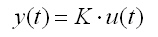

Das Proportionalglied hat für eine Sprungantwort (Rechtecksignal) ein proportional verkleinertes bzw. vergrößertes Signal. Wie man in dem unteren Applet sieht. Deshalb ist das Strukturbild ein waagrechter Strich im Quadrat. Ein Beispiel für den P-Regler ist ein Hebel wie in der Klospülung. Die Amplitude der Eingangssignale (links) sind um K- Verstärkte Ausgangssignale (rechts).
Der untere Funktionsgenerator ist einem hardware Funktionsgenerator nachempfunden. Man kann aber nicht die Amplitude einstellen.
Weitere Informationen in der freien Enzyklopedie Wikipedia: P-Glied
Autor: Harald Schellinger